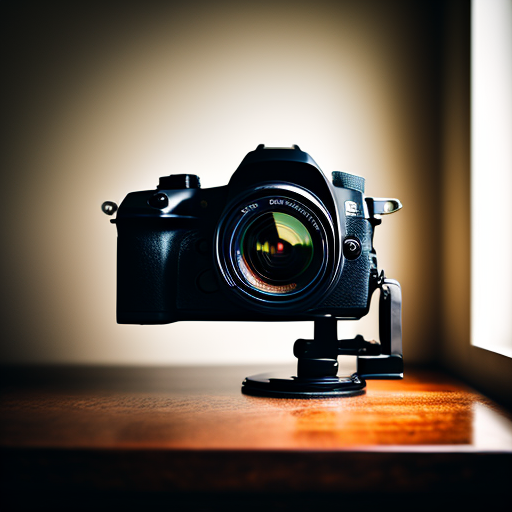

Компания обработки фото
Фотография – это больше, чем просто снимки. Это искусство, которое запечатлевает моменты, эмоции и истории. Photostudio72 – это команда профессиональных фотографов, страстно увлеченных своим делом. Мы верим, что каждая фотография – это произведение искусства, способное пробудить чувства и оставить след в вашей памяти. Photostudio72 предлагает широкий спектр фотоуслуг, чтобы удовлетворить потребности каждого клиента: Свадебная фотография, Семейные фотосессии, Портретная фотография, Рекламная фотография, Фотография событий. Photostudio72 отличает: Профессионализм и опыт, Индивидуальный подход, Современное оборудование, Приятная атмосфера. Photostudio72 – это не просто фотограф, а историк ваших самых важных моментов. Доверьте нам запечатлеть ваши самые яркие эмоции и воспоминания, и мы создадим для вас настоящие произведения искусства!
Фотография – это больше, чем просто снимки. Это искусство, которое запечатлевает моменты, эмоции и истории. Photostudio72 – это команда профессиональных фотографов, страстно увлеченных своим делом. Мы верим, что каждая фотография – это произведение искусства, способное пробудить чувства и оставить след в вашей памяти. Photostudio72 предлагает широкий спектр фотоуслуг, чтобы удовлетворить потребности каждого клиента: Свадебная фотография, Семейные фотосессии, Портретная фотография, Рекламная фотография, Фотография событий. Photostudio72 отличает: Профессионализм и опыт, Индивидуальный подход, Современное оборудование, Приятная атмосфера. Photostudio72 – это не просто фотограф, а историк ваших самых важных моментов. Доверьте нам запечатлеть ваши самые яркие эмоции и воспоминания, и мы создадим для вас настоящие произведения искусства!